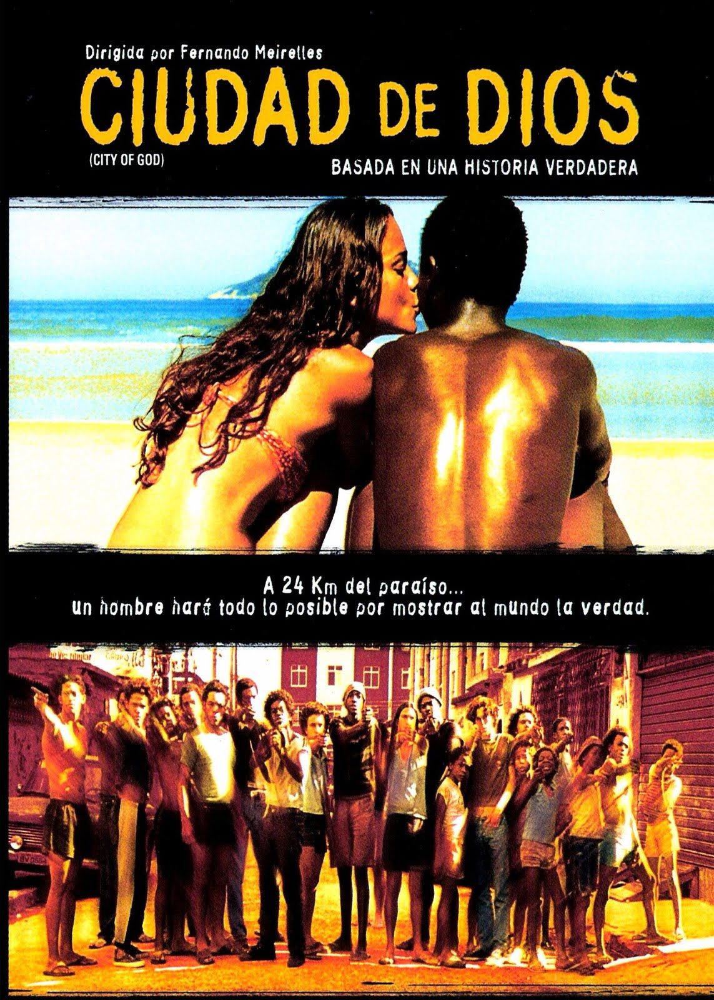
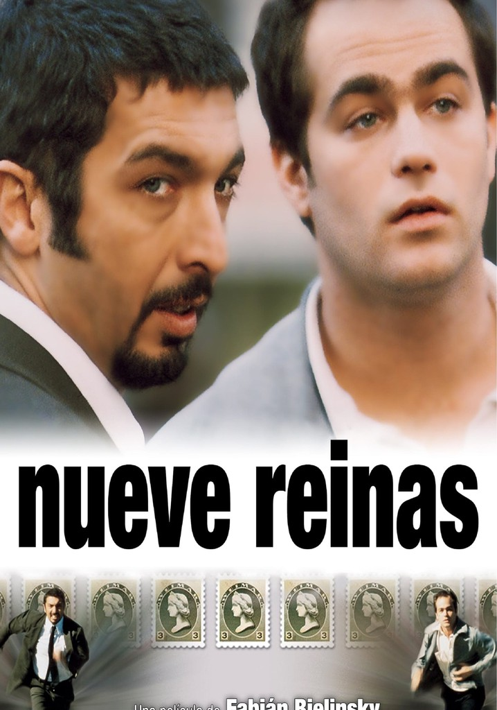
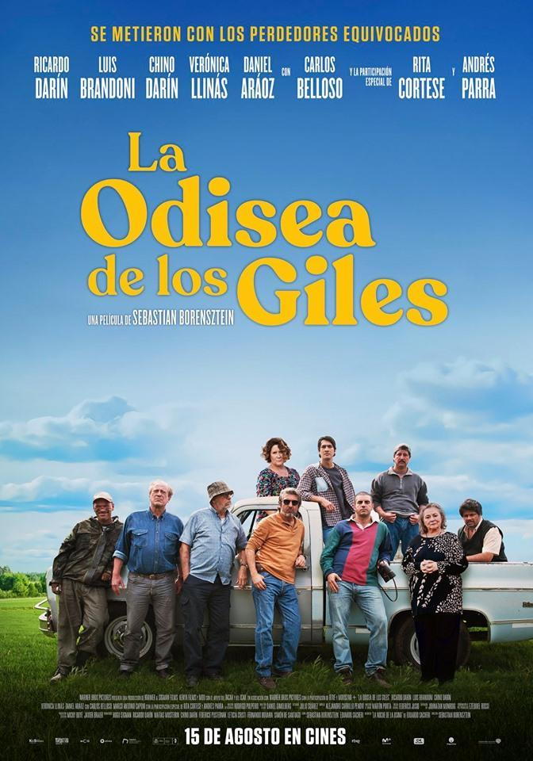
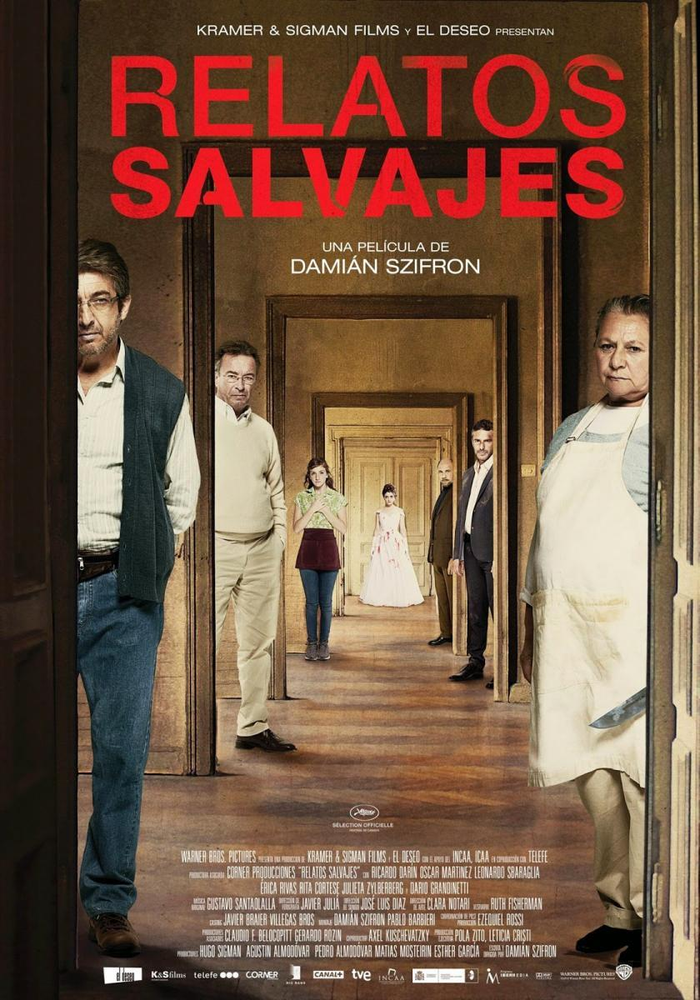

En esta seccion te mostramos la lista de sugerencias, donde podras ver las peliculas y series de distintos generos con mayor cantidad de reproducciones durante estos ultimos dos meses en toda America Latina